🌰 仙境幽谷
Everdell · 设计：James A. Wilson · Starling Games / Asmodee 出版 · 1–4 人 · 官方英文规则书全文翻译（24 页 · AI 辅助机翻）
本页收录《仙境幽谷》（Everdell, 2018）的原版官方规则书全部 24 页（底本：BGG 文件区官方修订二刷规则书，Everdell_Rulebook_2ndPrinting.pdf），逐页随图排列，点击任意图片即可放大查看；每页下方默认折叠了该页的 AI 辅助中文机翻对照，需要时可展开。规则内容归 Starling Games / Asmodee 及版权方所有，收录仅供个人学习查阅。
整理说明：机翻对照按本站术语口径对齐（牌库/手牌/回合/轮/板块/指示物等），PDF 图文混排页的语序可能与原书视觉顺序略有出入；规则细节请一律以页面上方原书页面为准。
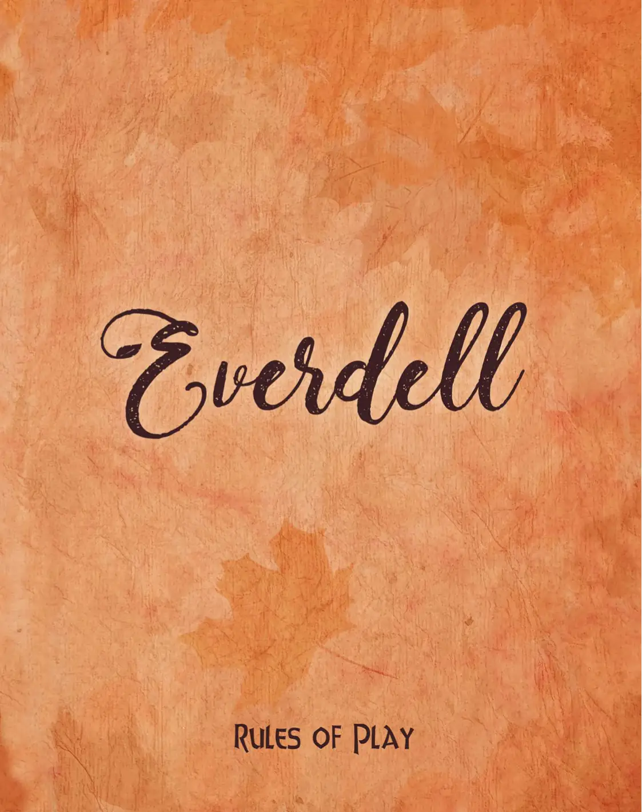
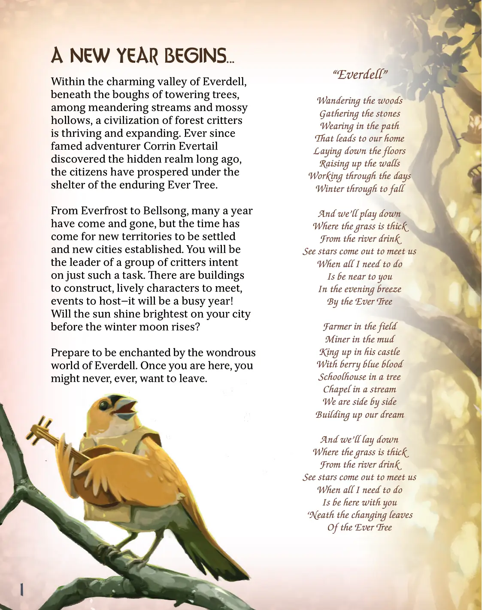
📝 第 2 页 AI 机翻对照（点击展开）
在迷人的埃弗德尔山谷中，
在高耸树木的枝叶下，
在蜿蜒的溪流和长满苔藓的
洼地之间，一个森林小动物的文明
正在繁荣和扩张。自从著名的冒险家
科林·埃弗特ail（Corrin Evertail）
很久以前发现了这个隐藏的领域，
市民们在永恒之树（Ever Tree）
的庇护下繁荣发展。
从永霜（Everfrost）到钟歌（Bellsong），
许多岁月已经流逝，但现在是时候
去定居新的领土和建立新的城市了。
你将成为一群志在完成此任务的
小动物的领袖。有建筑需要建造，
有生动的角色需要相遇，有活动需要举办——
这将是一年忙碌的时光！
在冬月升起之前，阳光会最灿烂地照耀你的城市吗？
准备好被埃弗德尔（Everdell）的奇妙世界所迷住。
一旦你来到这里，你或许永远、永远不想离开。
新的一年开始了...
"埃弗德尔"（Everdell）
在林间漫步
收集石头
开辟通往家园的小径
铺设地板
筑起墙壁
日复一日地劳作
从冬到秋
我们将在草丛茂密的地方玩耍
从河中饮水
看星星出来迎接我们
当所有我需要做的
是靠近你
在傍晚的微风中
在永恒之树旁
田野里的农夫
泥地里的矿工
城堡里的国王
有着蓝莓般的王室血脉
树上的学校
溪流中的小教堂
我们肩并肩
构筑我们的梦想
我们将在草丛茂密的地方躺下
从河中饮水
看星星出来迎接我们
当所有我需要做的
是和你在一起
在变幻的树叶下
在永恒之树旁
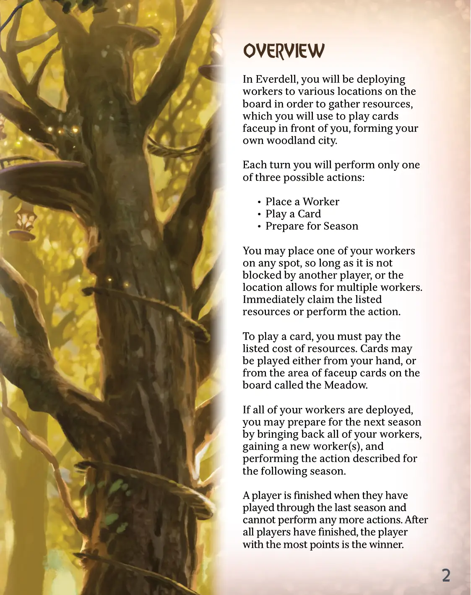
📝 第 3 页 AI 机翻对照（点击展开）
概述
在埃弗德尔（Everdell）中，你将部署
工人到版图上的各个位置，
以收集资源，这些资源将用于
在你面前翻开卡牌，
形成你自己的林地城市。
每个回合你只能执行
三种可能行动中的一种：
• 放置一个工人
• 打出一张卡牌
• 准备季节
你可以将你的工人放置在任何位置，
只要它不被其他玩家阻挡，
或者该位置允许多个工人。
立即获取列出的资源
或执行行动。
要打出卡牌，你必须支付列出的资源成本。
卡牌可以从你的手牌中打出，
也可以从版图上称为草地（Meadow）的
正面朝上卡牌区域打出。
如果你的所有工人都已部署，
你可以通过收回所有工人、
获得新工人（们），
并执行下一季节描述的行动，
来为下一季节做准备。
当玩家完成最后一个季节
且无法执行更多行动时，
该回合结束。所有玩家结束后，
得分最高的玩家获胜。
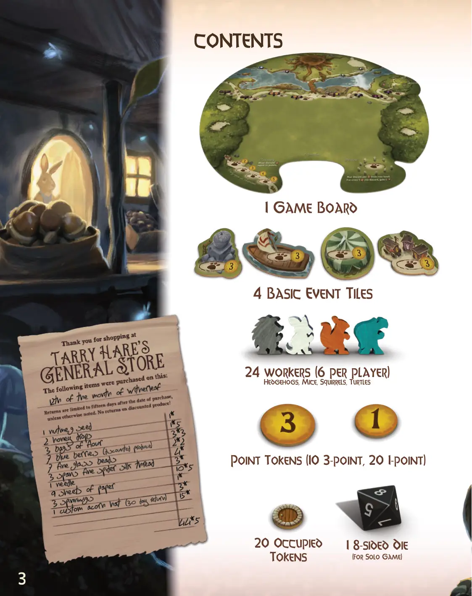
📝 第 4 页 AI 机翻对照（点击展开）
目录
1 游戏版图
4 基础事件板块
10个3分指示物，20个1分指示物
20个已占用指示物
1个8面骰子
（用于单人模式）
24个工人（每位玩家6个）
刺猬、老鼠、松鼠、乌龟
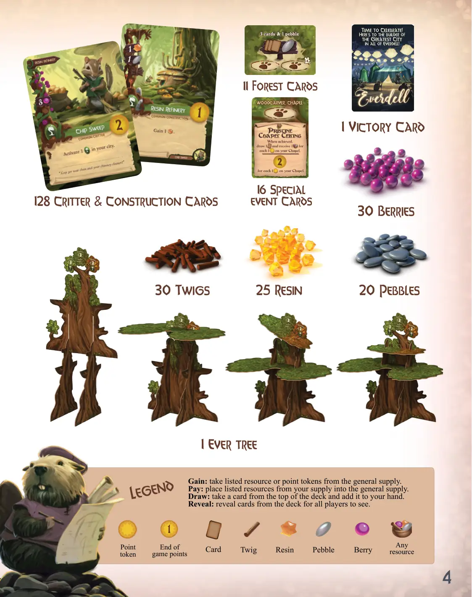
📝 第 5 页 AI 机翻对照（点击展开）
128个生物与建造卡牌
11个森林卡牌
16个特殊
事件卡牌
30个树枝
25个树脂
20个卵石
1棵永恒之树
1张胜利卡牌
30个浆果
分数
指示物
获得：从公共供应区拿取列出的资源或分数指示物。
支付：从你的供应区将列出的资源放入公共供应区。
摸牌：从牌库顶拿取一张牌并加入你的手牌。
揭示：从牌库中展示牌给所有玩家看。
游戏结束
分数
卡牌
树枝
树脂
卵石
浆果
任意
资源
图例
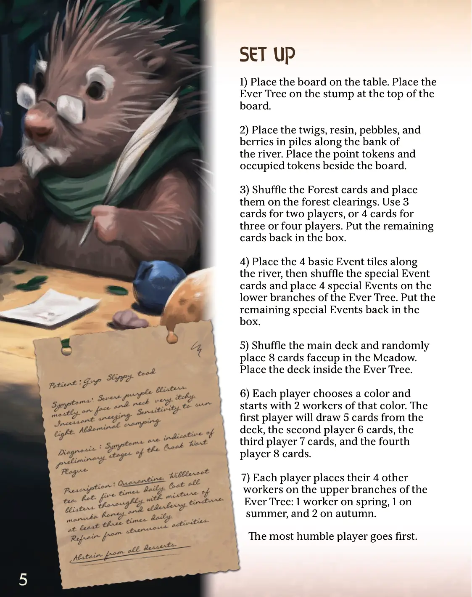
📝 第 6 页 AI 机翻对照（点击展开）
设置
- 将版图放在桌上。将永恒之树放在版图顶部的树桩上。
2) 将树枝、树脂、卵石和浆果沿河岸堆成小堆。将分数指示物和已占用指示物放在版图旁边。
3) 洗混森林卡牌并将它们放在森林空地上。两位玩家使用3张卡牌，三或四位玩家使用4张卡牌。将剩余卡牌放回盒中。
- 将4个基础事件板块沿河放置，然后洗混特殊事件卡牌并在永恒之树的较低树枝上放置4个特殊事件。将剩余的特殊事件放回盒中。
5) 洗混主牌库并在草地上随机面朝上放置8张牌。将牌库放在永恒之树内部。
6) 每位玩家选择一种颜色并开始拥有该颜色的2个工人。第一位玩家从牌库摸5张牌，第二位玩家摸6张牌，第三位玩家摸7张牌，第四位玩家摸8张牌。
- 每位玩家将其余4个工人放在永恒之树的较高树枝上：1个工人在春季，1个在夏季，2个在秋季。
最谦逊的玩家先开始。
<!--page:7>
这里将形成面朝下的
弃牌堆。
玩家在游戏过程中拥有的资源数量没有限制。如果任何资源用完，使用其他物品作为替代。
5张牌
玩家1
玩家2
6张牌
玩家3
玩家4
7张牌
8张牌
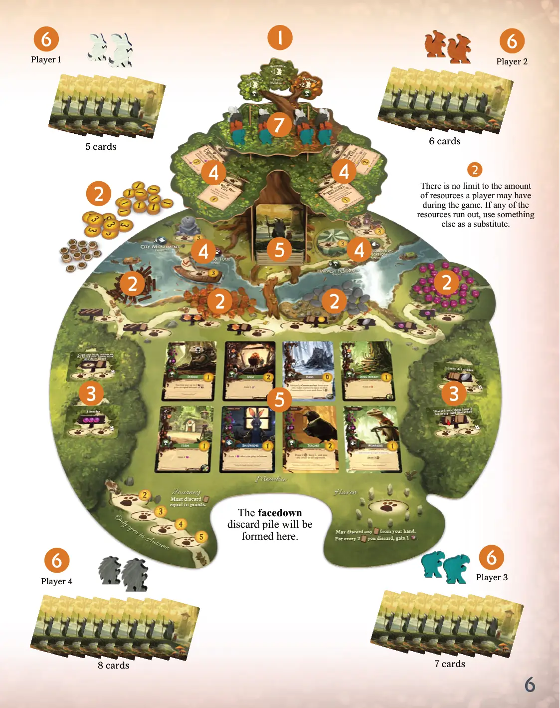
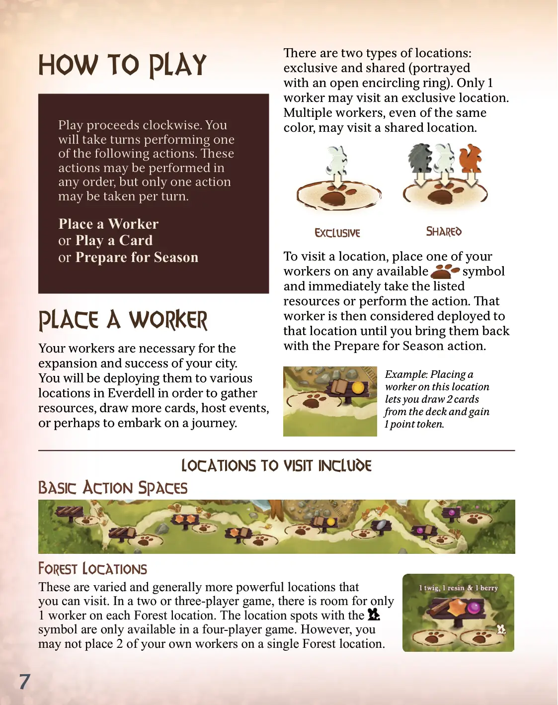
📝 第 8 页 AI 机翻对照（点击展开）
如何游戏
游戏按顺时针方向进行。你将轮流执行以下行动之一。这些行动可以按任何顺序执行，但每回合只能执行一个行动。
放置一个工人
或 打出一张卡牌
或 准备季节
放置工人
你的工人对于城市的扩张和成功至关重要。你将把他们部署到Everdell（埃弗德尔）的各个地点，以收集资源、摸更多牌、举办活动，或者或许踏上旅程。
可访问的地点包括
基础行动空间
森林地点
这些是多样化的地点，通常更强大，你可以访问它们。在两人或三人游戏中，每个森林地点只能容纳1个工人。带有符号的位置仅在四人游戏中可用。但是，你不能将2个自己的工人放在同一个森林地点上。
示例：将工人放置在这个位置上，让你可以从牌库中摸2张牌并获得1个分数指示物。
有两种类型的地点：
独占地点和共享地点（用开放的环绕圆环表示）。只有1个工人可以访问独占地点。多个工人，即使是相同颜色的，也可以访问共享地点。
独占
共享
要访问一个地点，将你的一个工人放在任何可用的符号上，并立即获取列出的资源或执行行动。然后，该工人被认为已部署到该地点，直到你通过"准备季节"行动将他们带回。
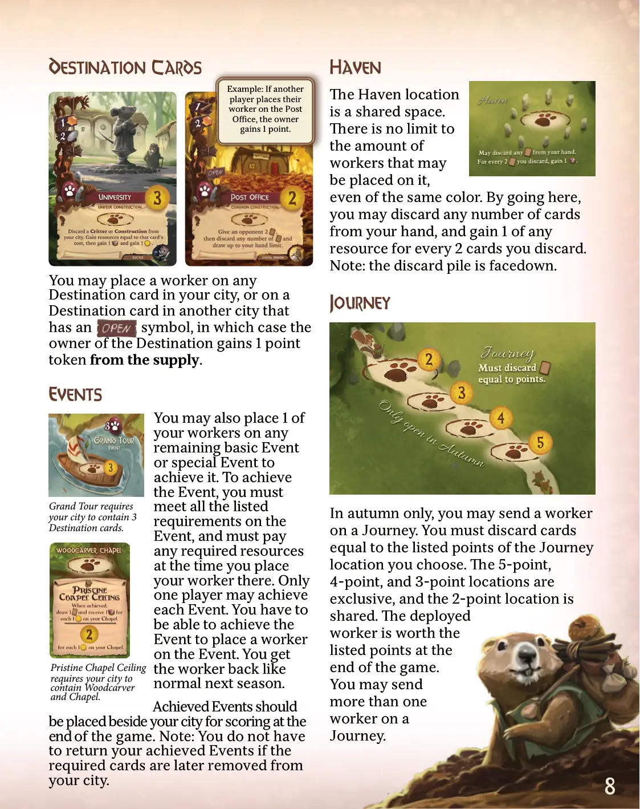
📝 第 9 页 AI 机翻对照（点击展开）
你也可以将你的1个工人放置在任何
剩余的基础事件或特殊事件上以完成它。
要完成该事件，你必须满足事件上列出的
所有要求，并在放置工人时支付任何
所需的资源。每个事件只能由一名玩家完成。
你必须能够完成该事件才能将工人
放置在该事件上。你将在下一个季节
像平常一样取回工人。
示例：如果另一名玩家将他们的工人
放置在邮局(Post Office)上，所有者获得1分。
目的地卡牌(Destination Cards)
你可以将工人放置在你城市中的任何
目的地卡牌上，或者放置在另一个城市中
带有 符号的目的地卡牌上，
在这种情况下，该目的地的所有者从
供应区获得1个分数指示物。
事件(Events)
pristine礼拜堂天花板(Pristine Chapel Ceiling)
要求你的城市包含木雕匠(Woodcarver)和礼拜堂(Chapel)。
大巡游(Grand Tour) 要求你的城市包含3张目的地卡牌。
避风港(Haven)
避风港位置是一个共享空间。
放置在上面的工人数量没有限制，
即使是相同颜色的也可以。通过前往这里，
你可以弃掉手牌中任意数量的卡牌，
并且每弃掉2张卡牌就获得1种任意资源。
注意：弃牌堆是面朝下的。
旅程(Journey)
仅在秋季，你可以派遣工人进行旅程。
你必须弃掉等于你所选择的旅程位置
所列点数的卡牌。5点、4点和3点的位置
是独占的，2点的位置是共享的。
部署的工人在游戏结束时
价值等于所列的点数。
你可以派遣
多个工人
进行旅程。
已完成的事件应放置在你的城市旁边
以便在游戏结束时计分。
注意：如果所需卡牌后来从你的城市中
被移除，你不必归还已完成的事件。
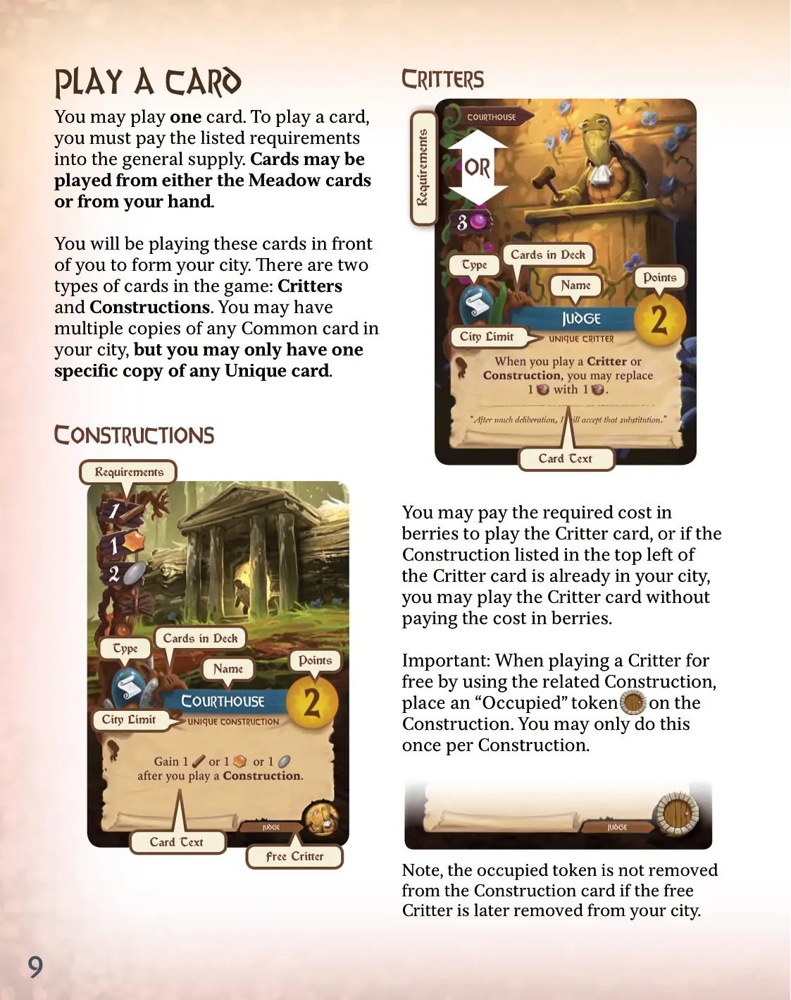
📝 第 10 页 AI 机翻对照（点击展开）
打出一张卡牌
你可以打出一张卡牌。要打出一张卡牌，
你必须将列出的要求支付到公共供应区。
卡牌可以从草地卡牌或从你的手牌中打出。
你将在自己面前打出这些卡牌来形成你的城市。游戏中有两种类型的卡牌：生物和建筑。你可以在你的城市中拥有任意普通卡牌的多份副本，但你只能拥有任意独特卡牌的一个特定副本。
你可以支付浆果要求来打出生物卡牌，或者如果生物卡牌左上角列出的建筑已经存在于你的城市中，你可以不支付浆果费用来打出生物卡牌。
重要：当通过相关建筑免费打出生物时，在该建筑上放置一个"已占用"指示物。每个建筑你只能这样做一次。
注意，如果后来免费打出的生物从你的城市中被移除，占用指示物不会从建筑卡牌上移除。
要求
分数
建筑
生物
要求
或
城市限制
类型
名称
牌库中的卡牌
卡牌文本
免费生物
分数
城市限制
类型
名称
牌库中的卡牌
卡牌文本
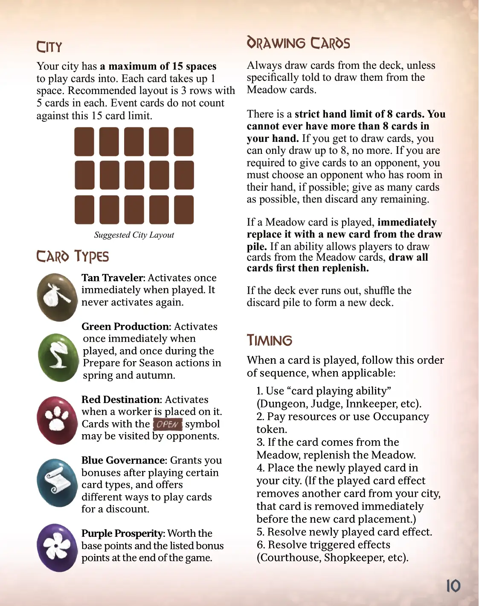
📝 第 11 页 AI 机翻对照（点击展开）
城市
你的城市最多有15个空间可以用来放置卡牌。每张卡牌占据1个空间。推荐的布局是3行，每行5张卡牌。事件卡牌不计入这15张卡牌的限制。
建议的城市布局
总是从牌库中抽牌，除非特别说明要从草地卡牌中抽取。
手牌有严格的8张上限。你手中永远不能超过8张卡牌。如果你需要抽牌，最多只能抽到8张，不能再多。如果你需要将卡牌交给对手，必须选择一个手牌有空位的对手（如果可能）；尽可能多地交出卡牌，然后弃掉剩余的卡牌。
如果打出了一张草地卡牌，立即从牌堆中抽取一张新卡牌替换它。如果有能力允许玩家从草地卡牌中抽牌，先抽完所有卡牌，然后再补充草地。
如果牌库用完，将弃牌堆洗牌形成新的牌库。
抽牌
卡牌类型
棕色旅行者：打出时立即激活一次。它永远不会再次激活。
绿色生产：打出时立即激活一次，并在春季和秋季的"为季节做准备"行动中各激活一次。
红色目的地：当工人放置在其上时激活。带有 符号的卡牌可能被对手访问。
蓝色治理：在打出特定类型的卡牌后为你提供奖励，并提供以折扣价打出卡牌的不同方式。
紫色繁荣：在游戏结束时获得基础分数和列出的奖励分数。
时序
- 使用"卡牌能力"（地牢、法官、客栈老板等）。
2. 支付资源或使用占用指示物。
3. 如果卡牌来自草地，补充草地。
4. 将新打出的卡牌放置在你的城市中。（如果打出的卡牌效果会从你的城市中移除另一张卡牌，那张卡牌会在新卡牌放置前立即被移除。）
- 解析新打出的卡牌效果。
6. 解析触发效果（法院、店主等）。
当打出卡牌时，按以下顺序执行（如适用）：
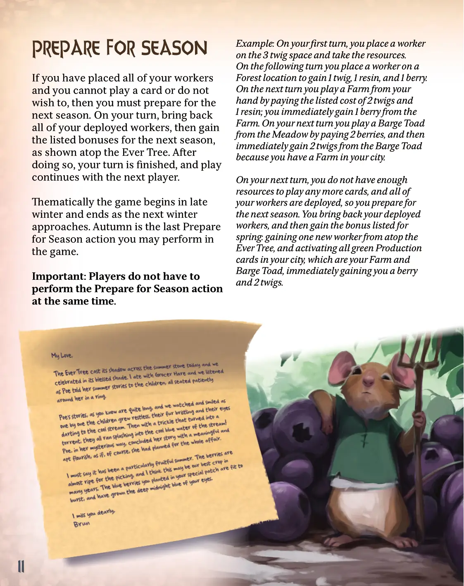
📝 第 12 页 AI 机翻对照（点击展开）
准备季节
如果你已经放置了所有你的工人，并且无法出牌或不想出牌，那么你必须为下一个季节做准备。在你的回合中，收回你已部署的所有工人，然后获得下一个季节列出的奖励，如常青树顶部所示。完成后，你的回合结束，游戏继续进行到下一位玩家。
从主题上讲，游戏始于晚冬，并在下一个冬季临近时结束。秋季是你可以在游戏中执行的最后一次"准备季节"行动。
重要：玩家不必同时执行"准备季节"行动。
示例：在你的第一个回合，你将一个工人放置在3树枝格上并获取资源。在接下来的回合中，你将一个工人放置在森林位置以获得1个树枝、1个树脂和1个浆果。在下一个回合中，你通过支付列出的2个树枝和1个树脂费用从手牌中打出一张农场卡；你立即从农场获得1个浆果。在下一个回合中，你通过支付2个浆果从草地打出一张蛙舟卡，然后因为你城市中有一张农场，你立即从蛙舟获得2个树枝。
在下一个回合，你没有足够的资源来出更多的牌，并且你所有的工人都已部署，因此你为下一个季节做准备。你收回已部署的工人，然后获得春季列出的奖励：从常青树顶部获得一个新工人，并激活你城市中所有绿色的生产卡，即你的农场和蛙舟，立即为你获得1个浆果和2个树枝。
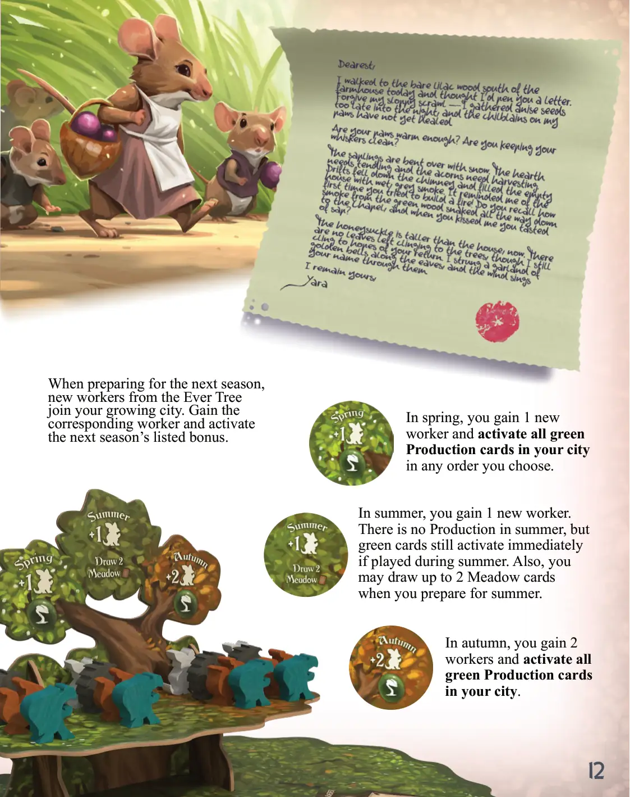
📝 第 13 页 AI 机翻对照（点击展开）
在春季，你获得1个新工人，并以你选择的任意顺序激活你城市中所有绿色的生产卡。
当为下一个季节做准备时，来自常青树的新工人会加入你不断发展的城市。获得相应的工人并激活下一个季节列出的奖励。
在夏季，你获得1个新工人。夏季没有生产，但如果在夏季出牌，绿色卡牌仍会立即激活。此外，当你为夏季做准备时，你可以最多抽取2张草地卡。
在秋季，你获得2个工人并激活你城市中所有绿色的生产卡。
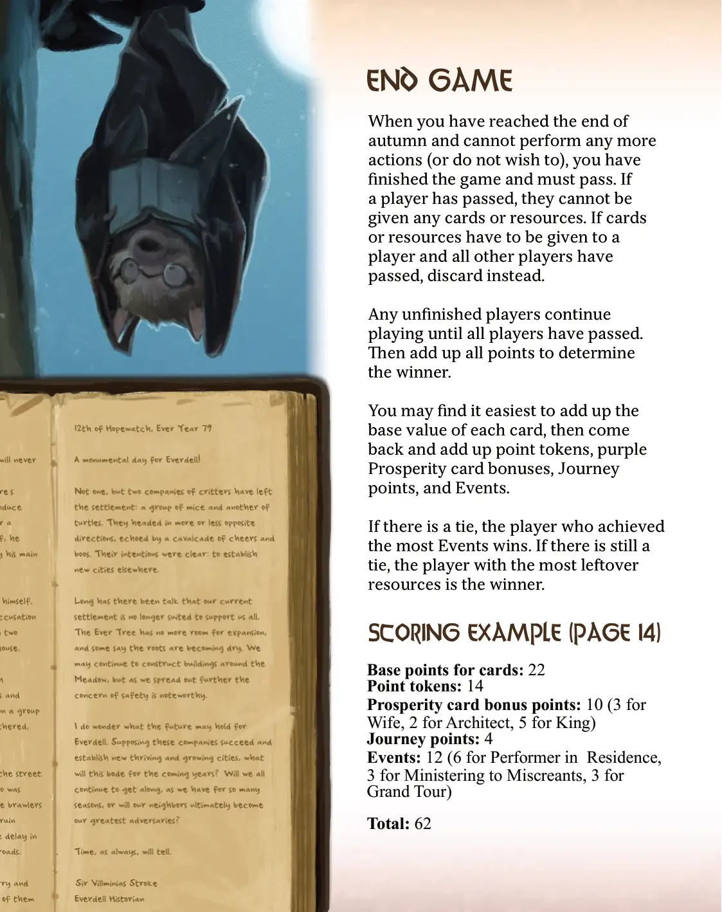
📝 第 14 页 AI 机翻对照（点击展开）
游戏结束
当你到达秋季末尾且无法执行任何行动（或不愿执行）时，你就完成了游戏并必须过牌。如果有玩家已过牌，他们不能获得任何卡牌或资源。如果必须将卡牌或资源给予某个玩家而所有其他玩家都已过牌，则改为弃置。
任何未完成的玩家继续游戏，直到所有玩家都已过牌。然后计算所有分数以确定获胜者。
你可能会发现，先计算每张卡牌的基础价值，然后再回来计算分数指示物、紫色繁荣卡牌奖励、旅程分数和事件是最简单的方法。
如果有平局，则获得最多事件的玩家获胜。如果仍然平局，则拥有最多剩余资源的玩家是获胜者。
计分示例（第14页）
卡牌基础分数：22
分数指示物：14
繁荣卡牌奖励分数：10（妻子3分，建筑师2分，国王5分）
旅程分数：4
事件：12（驻地表演者6分，安抚不良分子3分，盛大旅行3分）
总分：62
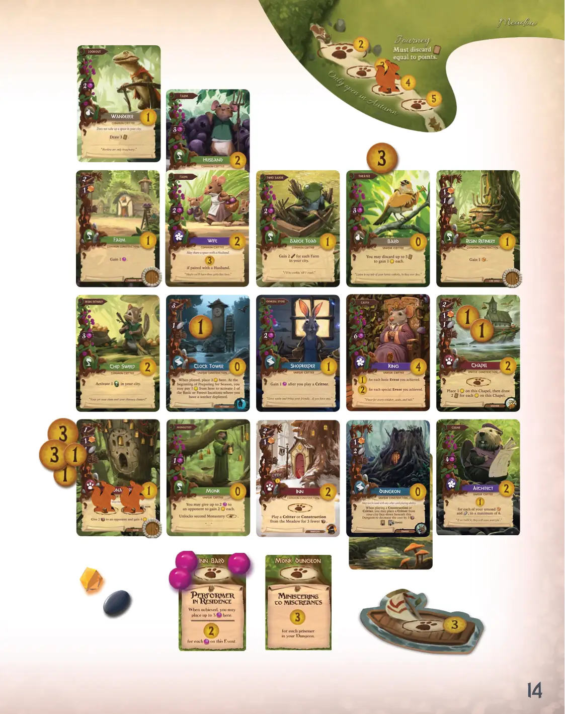
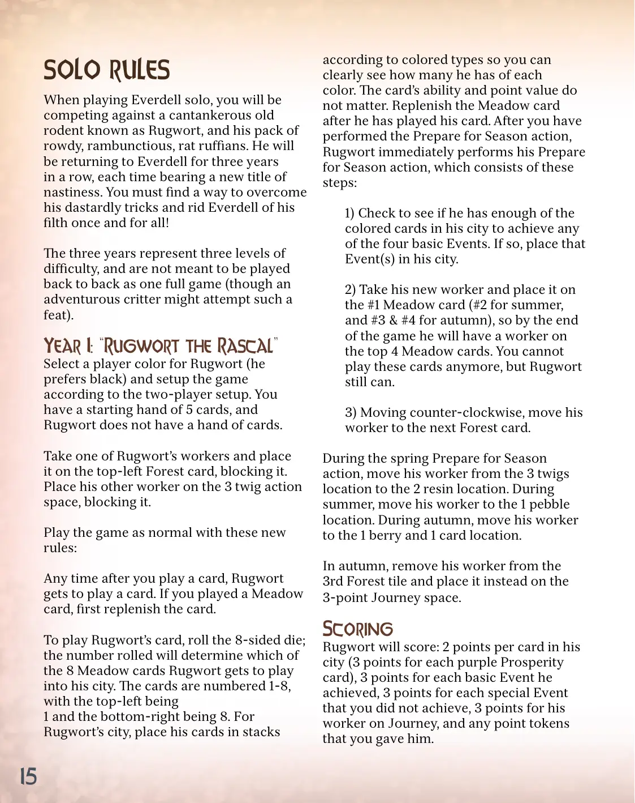
📝 第 16 页 AI 机翻对照（点击展开）
在玩《Everdell》单人模式时，你将与一个脾气暴躁的老鼠竞争，他名叫 Rugwort（绒草），以及他那群吵闹、喧闹、粗野的鼠辈恶棍。他将连续三年回到 Everdell，每次都带着一个新的恶名头衔。你必须想办法战胜他的卑鄙伎俩，并永远清除他对 Everdell 的污染！
这三年代表三个难度级别，不应作为一场完整的游戏连续游玩（尽管一个勇敢的小家伙可能会尝试这样的壮举）。
第一年："恶棍 Rugwort"
为 Rugwort 选择一个玩家颜色（他更喜欢黑色），并根据双玩家设置来设置游戏。你有 5 张起始手牌，而 Rugwort 没有手牌。拿取 Rugwort 的一个工人，并将其放在左上角的 Forest（森林）牌上，阻挡它。将他的另一个工人放在 3 twig（树枝）行动格上，阻挡它。
按照这些新规则正常进行游戏：
在你打出任何一张牌后，Rugwort 就可以打出一张牌。如果你打出的是 Meadow（草地）牌，先补充这张牌。
要打出 Rugwort 的牌，掷 8 面骰子；掷出的数字将决定 Rugwort 可以将哪张 8 张 Meadow 牌中的哪一张放入他的城市中。这些牌编号为 1-8，左上角为 1，右下角为 8。对于 Rugwort 的城市，根据颜色类型将他的牌堆叠放置，以便你可以清楚地看到他每种颜色有多少张。牌的能力和分数价值无关紧要。在他打出牌后补充 Meadow 牌。在你执行 Prepare for Season（准备季节）行动后，Rugwort 立即执行他的 Prepare for Season 行动，包括以下步骤：
1) 检查他城市中是否有足够数量的彩色牌来实现任何四个基本事件。如果有，将该事件放入他的城市中。
2) 拿取他的新工人，并将其放在 #1 Meadow 牌上（夏季为 #2，秋季为 #3 和 #4），这样到游戏结束时，他将在前 4 张 Meadow 牌上各有一个工人。你不能再打出这些牌，但 Rugwort 仍然可以。
3) 逆时针移动，将他的工人移动到下一张 Forest 牌。
在春季的 Prepare for Season 行动中，将他的工人从 3 twigs 位置移动到 2 resin（树脂）位置。在夏季，将他的工人移动到 1 pebble（鹅卵石）位置。在秋季，将他的工人移动到 1 berry（浆果）和 1 card（卡牌）位置。
在秋季，将他的工人从第 3 张 Forest 板块上移除，并将其放在 3-point Journey（旅程）格上。
计分
Rugwort 将获得：他城市中每张牌 2 分（每张紫色 Prosperity（繁荣）牌 3 分），每个他实现的基本事件 3 分，每个你没有实现的事件 3 分，他 Journey 上的工人 3 分，以及你给他的任何分数指示物。
单人模式规则
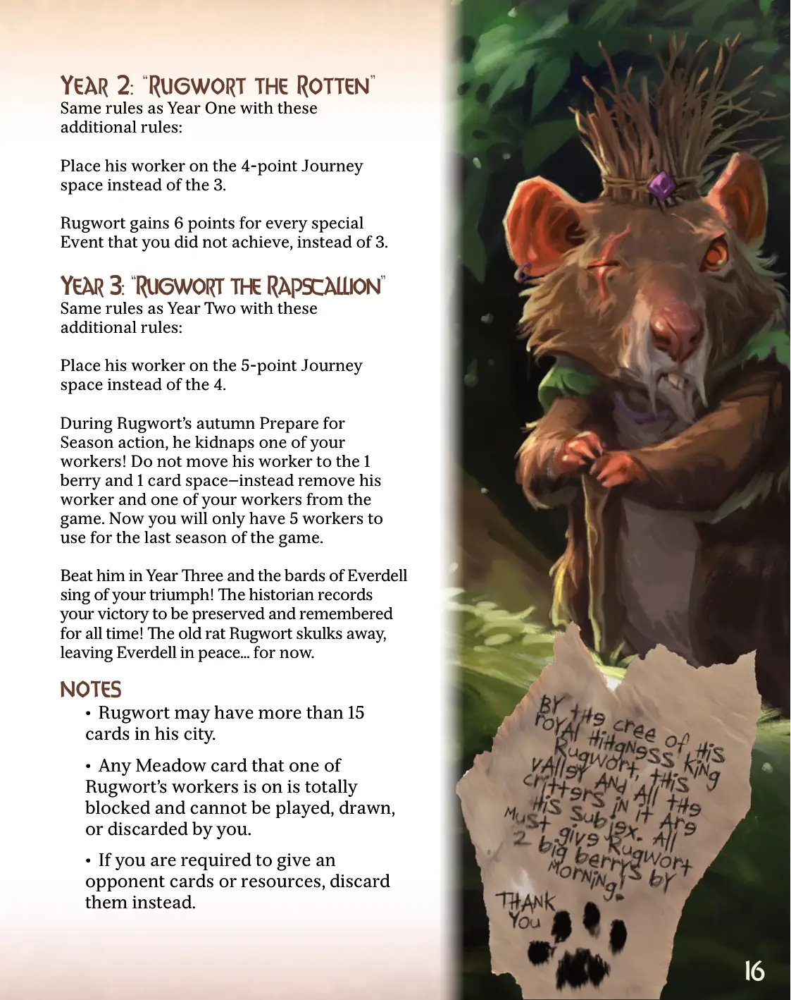
📝 第 17 页 AI 机翻对照（点击展开）
第二年："腐烂的鼠尾草"
与第一年相同的规则，附带以下
额外规则：
将他的工人放在4分的旅程空间，而不是3分。
对于你没有完成的每个特殊事件，Rugwort获得6分，而不是3分。
第三年："狡猾的鼠尾草"
与第二年相同的规则，附带以下
额外规则：
将他的工人放在5分的旅程空间，而不是4分。
在Rugwort的秋季准备季节行动期间，他会绑架你的一个工人！不要将他的工人移到1浆果和1卡牌空间——而是将他的工人和你的一个工人从游戏中移除。现在你只有5个工人可用于游戏的最后一个季节。
在第三年击败他，Everdell的吟游诗人将歌颂你的胜利！历史学家记录下你的胜利，使其得以保存并被永远铭记！老老鼠Rugwort偷偷溜走，暂时让Everdell恢复了和平...
注释
• Rugwort的城市中可能有超过15张卡牌。
• 任何Rugwort的工人所在的草地卡牌被完全封锁，你不能打出、摸牌或弃置这些卡牌。
• 如果你需要给予对手卡牌或资源，则弃置它们。
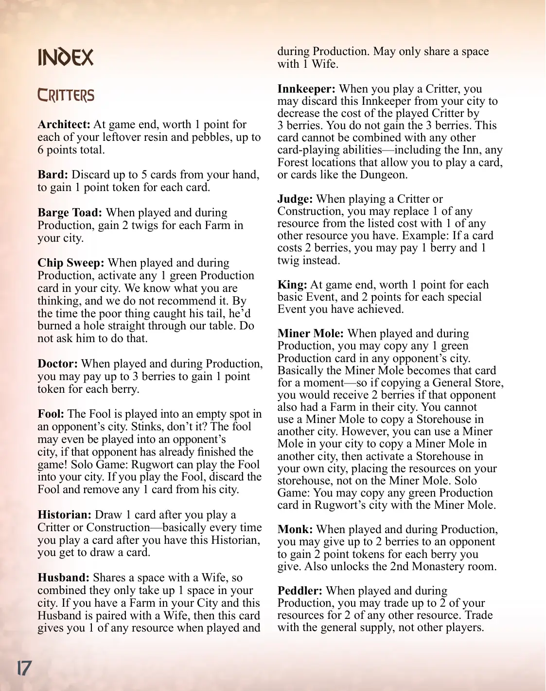
📝 第 18 页 AI 机翻对照（点击展开）
索引
在生产期间。只能与1个妻子共享一个空间。
旅店老板：当你打出一只小动物时，你可以从你的城市中弃置这张旅店老板，以减少所打出小动物3个浆果的成本。你不会获得这3个浆果。这张卡牌不能与其他任何出牌能力结合使用——包括旅店、任何允许你出牌的森林地点，或是像地牢这样的卡牌。
法官：当你打出小动物或建造物时，你可以将列出的成本中的任意1种资源替换为你拥有的任意1种其他资源。示例：如果一张卡牌需要2个浆果，你可以支付1个浆果和1根树枝代替。
国王：在游戏结束时，每张你已达成的基础事件获得1分，每张你已达成特殊事件获得2分。
鼹鼠矿工：打出时和在生产期间，你可以复制任何对手城市中的任意1张绿色生产卡牌。基本上鼹鼠矿工暂时变成那张卡牌——所以如果复制杂货店，如果该对手的城市中也有一个农场，你将获得2个浆果。你不能使用鼹鼠矿工复制另一个城市中的仓库。然而，你可以在自己的城市中使用鼹鼠矿工复制另一个城市中的鼹鼠矿工，然后激活自己城市中的仓库，将资源放在你的仓库上，而不是放在鼹鼠矿工上。单人模式：你可以使用鼹鼠矿工复制Rugwort城市中的任意1张绿色生产卡牌。
僧侣：打出时和在生产期间，你可以给对手最多2个浆果，以获得每个浆果2个分数指示物。同时解锁第2个修道院房间。
小贩：打出时和在生产期间，你可以用最多2个你的资源交换2个任意其他资源。与公共资源交换，而不是与其他玩家交换。
小动物
建筑师：在游戏结束时，每张你剩余的树脂和鹅卵石各得1分，最多共6分。
吟游诗人：从你的手牌中弃置最多5张卡牌，以获得每张卡牌1个分数指示物。
蟾蜍货船：打出时和在生产期间，每张你的城市中的农场获得2根树枝。
扫片工：打出时和在生产期间，激活你城市中的任意1张绿色生产卡牌。我们知道你在想什么，我们不推荐这么做。等那个可怜的家伙抓住自己的尾巴时，他已经在我们桌上烧了个洞。不要让他那么做。
医生：打出时和在生产期间，你可以支付最多3个浆果以获得每个浆果1个分数指示物。
傻瓜：傻瓜被打入对手城市中的一个空位。闻起来不怎么样，是吧？傻瓜甚至可以被打入一个已经完成游戏的对手的城市！单人模式：Rugwort可以将傻瓜打入你的城市。如果你打出傻瓜，弃置傻瓜并从他城市中移除任意1张卡牌。
历史学家：在你打出小动物或建造物后抽1张卡牌——基本上每次
当你拥有这位历史学家(Historian)后，你可以打出一张卡牌，然后你摸一张牌。
丈夫(Husband): 与妻子(Wife)共享一个空间，因此他们组合起来只占用你城市中的1个空间。如果你在你的城市中拥有一个农场(Farm)，并且这位丈夫与妻子配对，那么打出这张卡牌时，这张卡牌会给你1个任意资源，并且
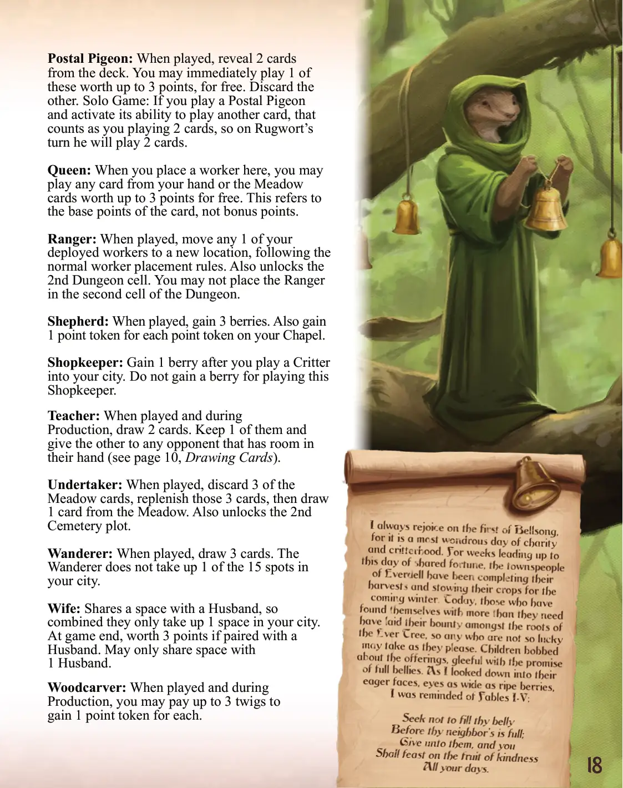
📝 第 19 页 AI 机翻对照（点击展开）
信鸽：打出时，从牌库中揭示2张牌。你可以免费立即打出其中1张价值最多3分的牌。弃掉另一张。单人模式：如果你打出信鸽并激活其能力来打出另一张牌，这算作你打出了2张牌，因此在Rugwort的回合他将打出2张牌。
皇后：当你在此放置一个工人时，你可以免费从你的手牌或草地卡牌中打出任何一张价值最多3分的牌。这指的是卡牌的基础分数，不包括奖励分数。
游侠：打出时，将你已部署的任意1个工人移动到一个新位置，遵循正常的工人放置规则。同时解锁第2个地牢格子。你不能将游侠放置在地牢的第2个格子中。
牧羊人：打出时，获得3个浆果。同时根据你礼拜堂上每个分数指示物获得1个分数指示物。
店主：在你的城市中打出一只小动物后，获得1个浆果。打出这张店主卡牌不会获得浆果。
教师：打出时以及在生产阶段，摸2张牌。保留其中1张，将另1张给任何手牌有空位的对手（参见第10页，摸牌）。
掘墓人：打出时，弃掉3张草地卡牌，补充这3张牌，然后从草地摸1张牌。同时解锁第2个墓地地块。
漫游者：打出时，摸3张牌。漫游者不占用你城市中的15个位置之一。
妻子：与丈夫共享一个空间，因此他们组合起来只占用你城市中的1个空间。游戏结束时，如果与丈夫配对则价值3分。只能与1个丈夫共享空间。
木雕匠：打出时以及在生产阶段，你可以支付最多3根树枝来获得每个树枝对应的1个分数指示物。
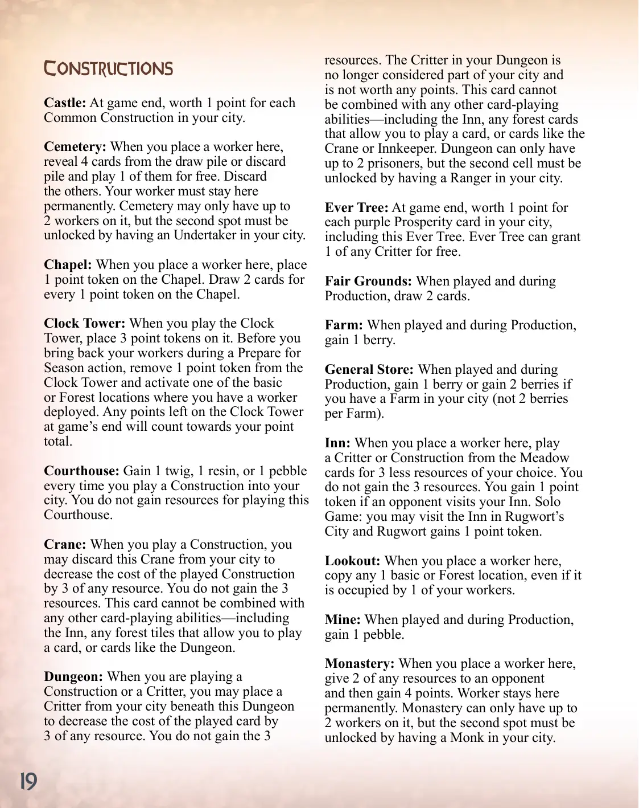
📝 第 20 页 AI 机翻对照（点击展开）
建筑
城堡：游戏结束时，根据你城市中的普通建筑数量，每个计1分。
墓地：当你在此放置一个工人时，从牌库或弃牌堆中翻开4张牌并免费打出其中1张。弃掉其余的牌。你的工人必须永久留在此处。墓地最多只能有2个工人，但第二个位置必须通过在你的城市中拥有一名掘墓人来解锁。
礼拜堂：当你在此放置一个工人时，在礼拜堂上放置1个分数指示物。每有1个分数指示物在礼拜堂上，就摸2张牌。
钟楼：当你打出钟楼时，在其上放置3个分数指示物。在你在"准备季节"行动期间召回你的工人之前，从钟楼上移除1个分数指示物，并激活你部署有工人的一个基础或森林地点。游戏结束时留在钟楼上的任何分数都将计入你的总分。
法院：每当你将一个建筑放入你的城市时，获得1根树枝、1份树脂或1颗鹅卵石。打出这张法院不会让你获得资源。
起重机：当你打出一个建筑时，你可以从你的城市中弃掉这张起重机，以减少所打建筑的3点任意资源成本。你不会获得这3点资源。这张卡牌不能与其他任何打牌能力结合使用——包括客栈、任何允许你打出卡牌的森林板块，或是像地牢这样的卡牌。
地牢：当你打出建筑或生物时，你可以将你城市中的一个生物放置到这张地牢下方，以减少所打卡牌的3点任意资源成本。你不会获得这3点资源。你地牢中的生物不再被视为你城市的一部分，也不计任何分数。这张卡牌不能与其他任何打牌能力结合使用——包括客栈、任何允许你打出卡牌的森林卡牌，或是像起重机或客栈老板这样的卡牌。地牢最多只能有2名囚犯，但第二个牢房必须通过在你的城市中拥有一名护林员来解锁。
永恒之树：游戏结束时，根据你城市中的紫色繁荣卡牌数量，每个计1分，包括这张永恒之树。永恒之树可以免费获得任意1个生物。
游乐场：打出时和生产期间，摸2张牌。
农场：打出时和生产期间，获得1个浆果。
杂货店：打出时和生产期间，获得1个浆果，或者如果你的城市中有农场（不是每个农场都获得2个浆果），则获得2个浆果。
客栈：当你在此放置一个工人时，从草地卡牌中打出一张生物或建筑，减少3点你选择的资源成本。你不会获得这3点资源。如果对手访问你的客栈，你获得1个分数指示物。单人模式：你可以访问绒蒿城中的客栈，绒蒿获得1个分数指示物。
瞭望塔：当你在此放置一个工人时，复制任意1个基础或森林地点，即使该地点
被你的1个工人占据。
矿场：打出时和生产阶段，获得1个鹅卵石。
修道院：当你在此放置一个工人时，给对手2个任意资源，然后获得4分。工人永久留在此处。修道院最多只能有2个工人，但第二个位置必须通过在你的城市中拥有一个修士来解锁。
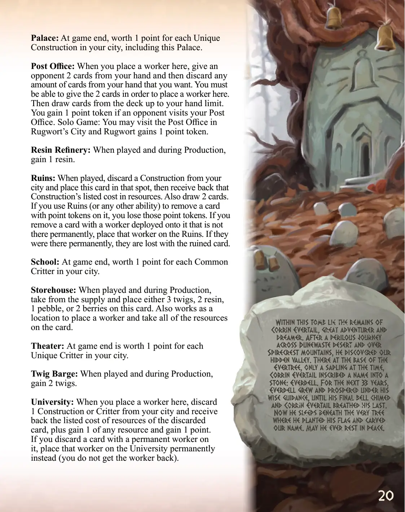
📝 第 21 页 AI 机翻对照（点击展开）
宫殿：在游戏结束时，根据你城市中的每个独特建造物计1分，包括这座宫殿本身。
邮局：当你在这里放置一个工人时，从你的手牌中给对手2张牌，然后弃掉你手牌中任意数量的牌。你必须能够给出这2张牌才能在这里放置工人。然后从牌库摸牌直到你的手牌上限。如果对手访问你的邮局，你获得1个分数指示物。单人模式：你可以访问Rugwort城市中的邮局，Rugwort获得1个分数指示物。
树脂精炼厂：打出时和生产阶段期间，获得1个树脂。
废墟：打出时，从你的城市中弃掉一个建造物，并将这张牌放在那个位置，然后获得该建造物所列资源成本等值的资源。同时摸2张牌。如果你使用废墟（或任何其他能力）移除一张带有分数指示物的牌，你会失去那些分数指示物。如果你移除一张上面部署了非永久性工人的牌，将该工人放置在废墟上。如果工人是永久性的，他们会随着被毁的牌一同失去。
学校：在游戏结束时，根据你城市中的每个普通生物计1分。
仓库：打出时和生产阶段期间，从供应区获取并放置3根树枝、2个树脂、1个鹅卵石或2个浆果到这张牌上。同时也作为一个可以放置工人的位置，并获取牌上的所有资源。
剧院：在游戏结束时，根据你城市中的每个独特生物计1分。
树枝驳船：打出时和生产阶段期间，获得2根树枝。
大学：当你在这里放置一个工人时，从你的城市中弃掉1个建造物或生物，并获得被弃牌所列资源成本等值的资源，同时获得任意1种资源和1分。如果你弃掉一张带有永久性工人的牌，将该工人永久性地放置在大学上（你不会重新获得该工人）。
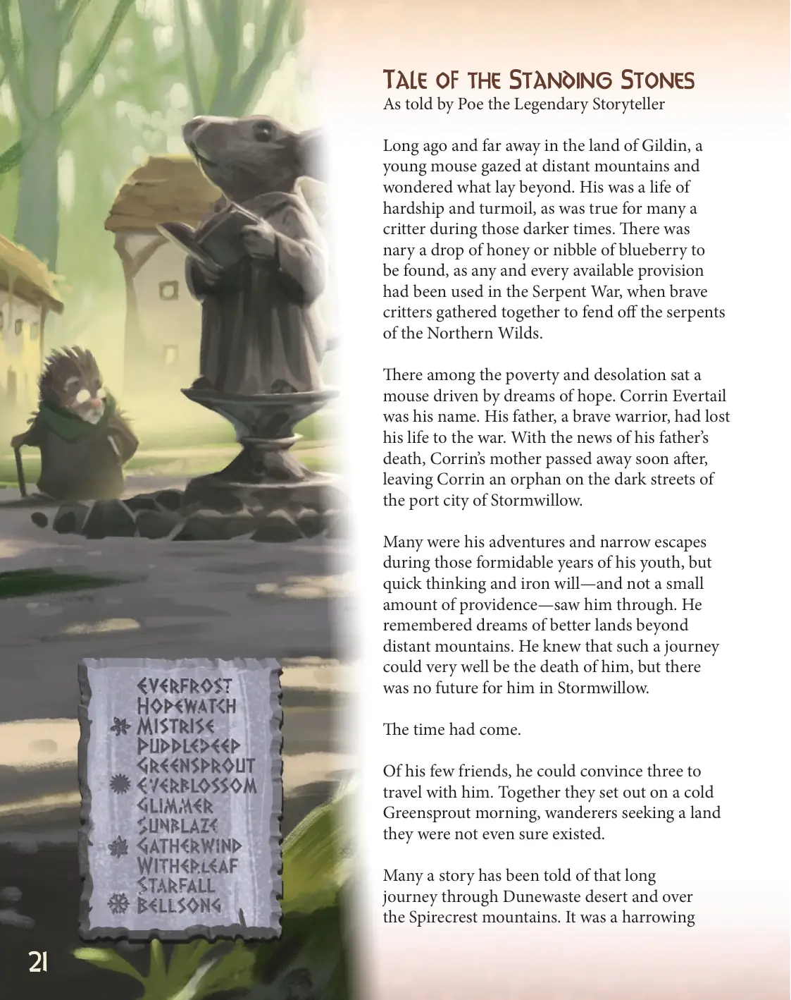
📝 第 22 页 AI 机翻对照（点击展开）
立石传说
传奇说书人波伊讲述
很久很久以前，在遥远的吉尔丁(Gildin)土地上，
一只年轻的小鼠凝望着远方的群山，思索着山的那边有什么。他的生活充满了艰辛与动荡，在那个黑暗时代，许多小生物都是如此。找不到一滴蜂蜜或一颗蓝莓的踪迹，因为所有可用的物资都在蛇之战中耗尽了，当时勇敢的小生物们聚集在一起抵御北方荒野(Northern Wilds)的蛇类。
在贫困与荒凉之中，坐着一只被希望梦想驱动的小鼠。他的名字是科林·埃弗泰尔(Corrin Evertail)。他的父亲，一位勇敢的战士，在战争中失去了生命。随着父亲去世的消息，科林的母亲也很快离世，留下科林成为暴柳港(Stormwillow)黑暗街道上的孤儿。
在他青年时期的那些艰难岁月里，他经历了许多冒险和死里逃生，但敏捷的思维和坚定的意志——还有不小的天命——帮助他度过了难关。他记得远方山脉之外有更美好的土地的梦想。他知道这样的旅程很可能导致他的死亡，但在暴柳港他没有未来。
时机已到。
在他为数不多的朋友中，他能说服三人与他同行。在一个寒冷的绿芽之春(Greensprout)早晨，他们一起出发，成为流浪者，寻找一个他们甚至不确定是否存在的土地。
关于穿越沙荒漠(Dunewaste)沙漠和越过尖峰山脉(Spirecrest)山脉的漫长旅程，已经讲述了许多故事。这是一段惊心动魄的
📝 第 23 页 AI 机翻对照（点击展开）
制作人员
游戏设计
James A. Wilson
插画
Andrew Bosley
游戏与创意开发
Dann May
Brenna Noonan
James A. Wilson
艺术指导与平面设计
Dann May
额外图形与排版
Cody Jones
市场营销
Brenna Noonan
制作管理
Cody Jones
执行制作
Dan Yarrington
测试玩家
Clarissa Wilson, Jacob Parker,
Nathan Wilson, Andrew &
Jordana Osborne, Justin Schaffer,
Michael Mindes, Seth Jaffee, Joel
Eddy, Allen Chang, Cody Jones,
Chris McMullen, Michael Fox,
Andrew Bosley, 特别感谢来自BGG的
Michael Cyr。
由 Starling Games 出版
访问我们的网站 Starling.Games
一场持续了九个月的冒险，最终夺走了科林（Corrin）最亲密朋友的生命。但当那曾支撑他们穿越困境的希望之线变得最为脆弱时，在希望守望日（Hopewatch）的第19天，冒险者们登上了最后一座山峰，并目睹了他们一直追寻的奇迹。
那天太阳欣喜若狂，它驱散了长久以来阴郁的乌云，将光芒照耀在下方辉煌的翡翠山谷上。那是一片未被战争玷污、未被贪婪摧毁的土地。
在山谷中探索数周后，科林和他的同伴最终在将成为我们所知的希望纪念碑——永恒之树（Ever Tree）——的树根处安顿下来。他将山谷命名为永恒谷（Everdell），并为它赐下祝福。
在找到一个安身之所后，科林立即着手建造一座纪念碑，以纪念并永远铭记发现这片圣地的旅程。
他们竖起了九块白石，每块都代表着他们旅程中的一个月。他们在这些石头上雕刻了回忆，雕刻了希望与梦想，最后，为我们这些如今在这心爱国度享受着和平与舒适的人留下了一个挑战。
这些是科林·埃弗泰尔（Corrin Evertail）的话语，被镌刻在那块石头上，如今为我们讲述，让我们永不忘怀：
没有悲伤是希望无法穿透的黑暗。
即使午夜也会让位给黎明。
把握当下，让生活歌唱。
让你的钟声永远响亮而真实。
现在，去吧，走进世界，让你的生命成为一块立石，将在未来的许多季节里鼓励和激励他人。
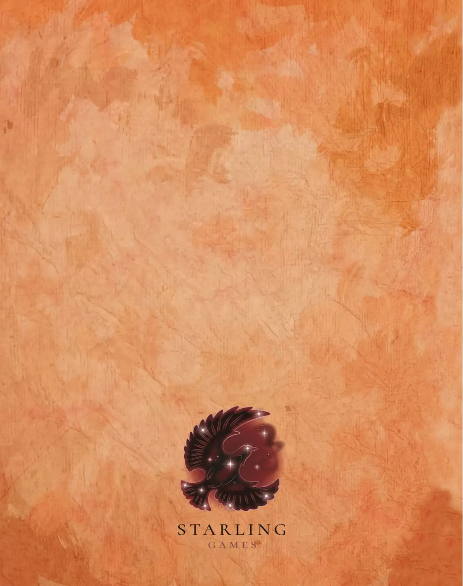